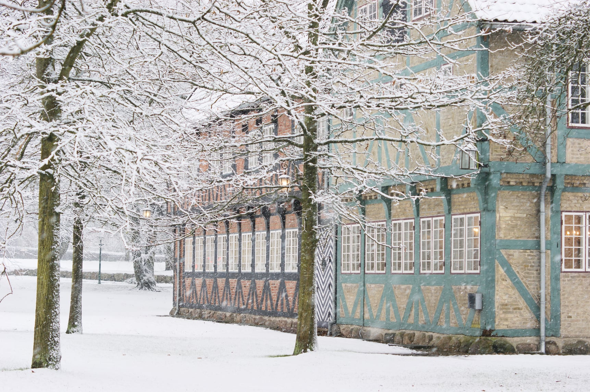
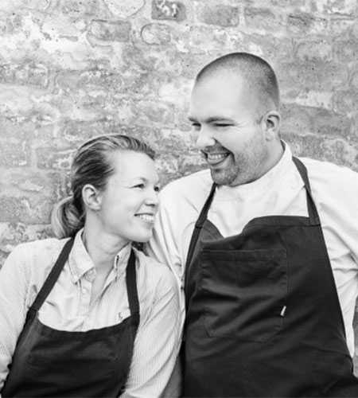

Historien om Svalegaarden i Hasseris
1952 blev den smukke købmandsgård genopført på hjørnet af Thorsens Allé og Svalegårdsvej, og gården blev da også døbt Svalegaarden. Den idylliske gård står til stadighed på samme adresse, og har sat rammen for mange begivenheder og oplevelser gennem årene.
I juni 2016 fik Svalegaarden nye forpagterer med ny gejst og lysende håb for fremtiden - Mette og Stefan fra det tidligere Restaurant Mest.
Mette og Stefan kommer med nye kræfter til- og friske øjne på den smukke renoverede købmandsgård, som hidtil har fungeret som selskabsforretning.

Svalegaarden Mest i dag
Mette og Stefan har en vision om at tage det bedste fra Restaurant Mest og videreføre det i gårdens smukke rammer i hjertet af Aalborg. Tankerne bag Svalegaarden Mest er gastronomi møder landlig idyl, hvor der er fokus på at skabe mindeværdige oplevelser.
De første år med Svalegaarden Mest Svalegaarden Mest er vidunderlig at arbejde med. De gamle bygninger mærkes og giver os en naturlig ydmyghed og lyst til at bringe de gode oplevelser videre til vores gæster. Vi har fundet os godt tilrette i Hasseris arbejder med mange forskellige vinkler i gastronomien. Svalegaarden Mest rummer alt lige fra private fester, mødefaciliteter, foredrag til mad ud af huset.
Mad Med Mest – frokostordning til virksomheder går solo. Mad Med Mest er i en stor udvikling og stadig flere og flere virksomheder træder ind i ordningen. Derfor tog vi i juli 2018 et spring og flyttede denne del af Svalegaarden Mest til en andre og større lokaler, så Mad Med Mest kan få lov til at udfolde sig under de rigtige forhold.
Michel Lycoops er styrmanden i Mad Med Mest og har været ansat som kok lige fra Restaurant Mest oprindelse i 2010. Vi glæder os meget over dette samarbejde ser en lys fremtid for Mad Med Mest.
